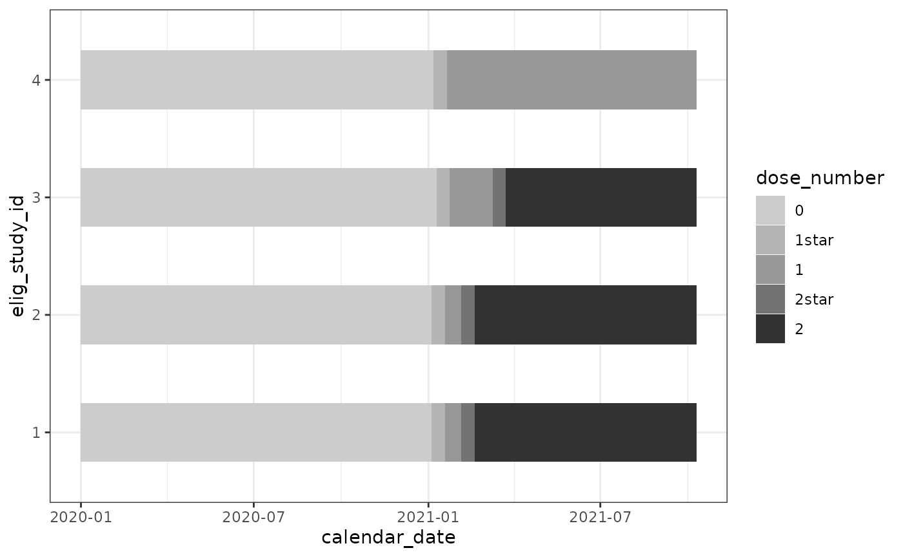
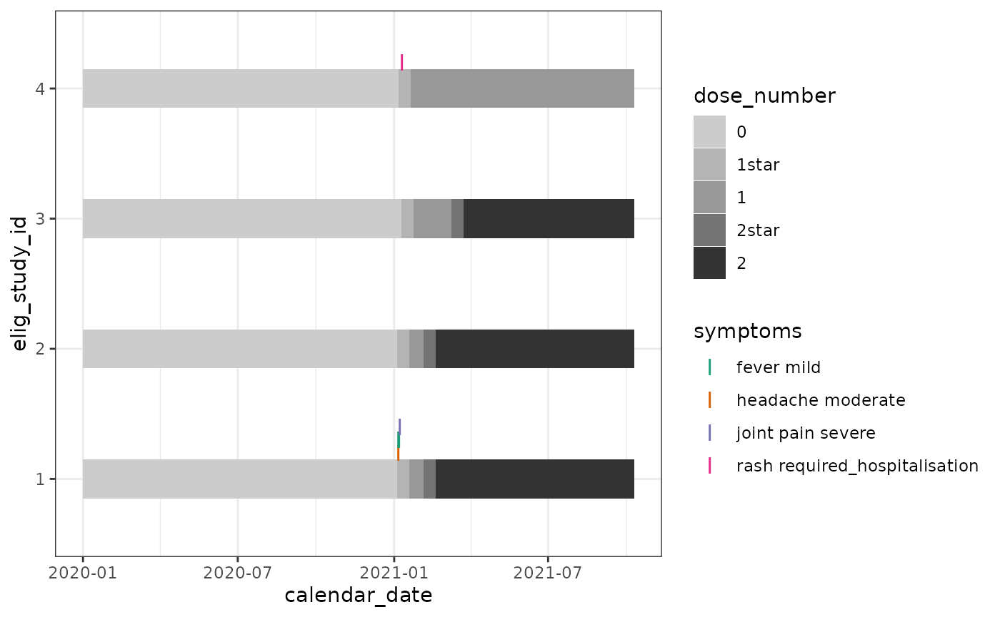

Symptoms_diary
symptoms_diary.Rmd
library(chronogram)
library(dplyr)
#>
#> Attaching package: 'dplyr'
#> The following objects are masked from 'package:stats':
#>
#> filter, lag
#> The following objects are masked from 'package:base':
#>
#> intersect, setdiff, setequal, union
library(ggplot2)We re-use the smallstudy dataset with two
modifications:
addition of participant #4, who has only dose 1
addition of symptoms diary information, including that participant #4 had a serious reaction to vaccination and therefore opted not to have further vaccinations.
This is a plausible, but fictitious dataset.
data(smallstudy)
metadata <- smallstudy$small_study_metadata
ab <- smallstudy$small_study_Ab
## Add a 4th participant's metadata ##
## [in real use, a bigger metadata tibble should be made, not two tibbles combined via bind_rows()]
metadata <- bind_rows(
metadata,
tibble::tribble(
~elig_study_id, ~age, ~sex, ~dose_1, ~date_dose_1, ~dose_2, ~date_dose_2,
4, 25, "M", "AZD1222", lubridate::dmy('07012021'), NA, NA
)
)
metadata <- metadata %>%
mutate(sex = factor(sex)) %>%
mutate(dose_1 = factor(dose_1))
metadata
#> # A tibble: 4 × 7
#> elig_study_id age sex dose_1 date_dose_1 dose_2 date_dose_2
#> <dbl> <dbl> <fct> <fct> <date> <fct> <date>
#> 1 1 40 F AZD1222 2021-01-05 AZD1222 2021-02-05
#> 2 2 45 F BNT162b2 2021-01-05 BNT162b2 2021-02-05
#> 3 3 35 M BNT162b2 2021-01-10 BNT162b2 2021-03-10
#> 4 4 25 M AZD1222 2021-01-07 NA NA
##--------------------------------------------------------------------
## Add symptoms diary info
symptoms_to_add <- tibble::tribble(
~elig_study_id, ~calendar_date, ~symptom_fever, ~symptom_headache, ~symptom_joint_pain, ~symptom_rash,
1, "06012021", "mild", "moderate", NA, NA,
1, "07012021", "mild", NA , NA, NA,
1, "08012021", NA, NA , "severe", NA,
4, "10012021", NA, NA, NA, "required_hospitalisation")
symptoms_to_add <- symptoms_to_add %>%
mutate(calendar_date = lubridate::dmy(calendar_date))Assemble this new chronogram
start <- "01012020"
end <- "10102021"
cg <- cg_assemble(
start_date = start,
end_date = end,
calendar_date_col = calendar_date,
metadata = metadata,
metadata_ids_col = elig_study_id,
experiment_data_list = list(ab, symptoms_to_add)
)
#> Checking input parameters...
#> -- checking start date 01012020
#> -- checking end date 10102021
#> -- checking end date later than start date
#> -- checking metadata
#> -- checking experiment data list
#> --- checking experiment data list slot 1
#> --- checking experiment data list slot 2
#> Input checks completed
#> Chronogram assembling...
#> -- chrongram_skeleton built
#> -- chrongram built with metadata
#> -- adding experiment data
#> --- adding experiment data slot 1 cols... elig_study_id calendar_date serum_Ab_S ...
#> --- adding experiment data slot 2 cols... elig_study_id calendar_date symptom_fever ...First annotate the vaccines
cg <- cg_annotate_vaccines_count(
cg,
## the prefix to the dose columns: ##
dose = dose,
## the output column name: ##
dose_counter = dose_number,
## the prefix to the date columns: ##
vaccine_date_stem = date_dose,
## use 14d to 'star' after a dose ##
intermediate_days = 14
)
#> Using stem: date_dose
#> Found vaccine dates
#> date_dose_1
#>
#> date_dose_2
## plot over time ##
cg %>%
## refactor for gradient fill ##
mutate(dose_number = factor(dose_number,
levels = c(
"0",
"1star",
"1",
"2star",
"2" ))) %>%
ggplot(
aes(
x = calendar_date,
y = elig_study_id,
fill = dose_number
)
) +
geom_tile(height = 0.5) +
scale_fill_grey(end = 0.2, start = 0.8) +
theme_bw()
Now we can plot how these symptoms to see how they map in time to vaccinations.
cg %>%
## refactor for gradient fill ##
mutate(dose_number = factor(dose_number,
levels = c(
"0",
"1star",
"1",
"2star",
"2" ))) %>%
ggplot(
aes(
x = calendar_date,
y = elig_study_id,
fill = dose_number
)
) +
geom_tile(height = 0.3) +
scale_fill_grey(end = 0.2, start = 0.8) +
geom_point(data = . %>%
## filter to symptoms that are present ##
filter(!is.na(symptom_rash)) %>%
mutate(symptom_rash = paste("rash", symptom_rash)),
aes(col = symptom_rash),
shape = "I",
size = 4,
position = position_nudge(y=0.2)) +
geom_point(data = . %>%
filter(!is.na(symptom_headache)) %>%
mutate(symptom_headache = paste("headache", symptom_headache)),
aes(col = symptom_headache),
shape = "I",
size = 4,
position = position_nudge(y=0.2)) +
geom_point(data = . %>%
filter(!is.na(symptom_fever)) %>%
mutate(symptom_fever = paste("fever", symptom_fever)),
aes(col = symptom_fever),
shape = "I",
size = 4,
position = position_nudge(y=0.3)) +
geom_point(data = . %>%
filter(!is.na(symptom_joint_pain)) %>%
mutate(symptom_joint_pain = paste("joint pain", symptom_joint_pain)),
aes(col = symptom_joint_pain),
shape = "I",
size = 4,
position = position_nudge(y=0.4)) +
## swap the fill scale, and stop colour being included in this guide ##
scale_fill_grey(
end = 0.2, start = 0.8,
name = "dose_number",
na.translate = FALSE,
na.value = NA,
guide = guide_legend(override.aes = list(color = NA))) +
## swap the colour scale ##
scale_color_brewer(type = "qual",palette = 2,
name = "symptoms") +
theme_bw() +
theme(legend.position = "right",
legend.direction = "vertical")
#> Scale for fill is already present.
#> Adding another scale for fill, which will replace the existing scale.
In our test dataset:
participant 1 reported a post-first-dose fever, headache, and joint pain a few days later.
participants 2 and 3 reported no symptoms after either dose.
participant 4 reported a significant symptom after dose 1 and did not receive further doses.
SessionInfo
sessionInfo()
#> R version 4.4.1 (2024-06-14)
#> Platform: x86_64-pc-linux-gnu
#> Running under: Ubuntu 22.04.4 LTS
#>
#> Matrix products: default
#> BLAS: /usr/lib/x86_64-linux-gnu/openblas-pthread/libblas.so.3
#> LAPACK: /usr/lib/x86_64-linux-gnu/openblas-pthread/libopenblasp-r0.3.20.so; LAPACK version 3.10.0
#>
#> locale:
#> [1] LC_CTYPE=C.UTF-8 LC_NUMERIC=C LC_TIME=C.UTF-8
#> [4] LC_COLLATE=C.UTF-8 LC_MONETARY=C.UTF-8 LC_MESSAGES=C.UTF-8
#> [7] LC_PAPER=C.UTF-8 LC_NAME=C LC_ADDRESS=C
#> [10] LC_TELEPHONE=C LC_MEASUREMENT=C.UTF-8 LC_IDENTIFICATION=C
#>
#> time zone: UTC
#> tzcode source: system (glibc)
#>
#> attached base packages:
#> [1] stats graphics grDevices utils datasets methods base
#>
#> other attached packages:
#> [1] ggplot2_3.5.1 dplyr_1.1.4 chronogram_1.0.0
#>
#> loaded via a namespace (and not attached):
#> [1] gtable_0.3.5 jsonlite_1.8.8 highr_0.11 compiler_4.4.1
#> [5] tidyselect_1.2.1 stringr_1.5.1 tidyr_1.3.1 jquerylib_0.1.4
#> [9] systemfonts_1.1.0 scales_1.3.0 textshaping_0.4.0 yaml_2.3.10
#> [13] fastmap_1.2.0 R6_2.5.1 generics_0.1.3 knitr_1.48
#> [17] tibble_3.2.1 desc_1.4.3 munsell_0.5.1 lubridate_1.9.3
#> [21] RColorBrewer_1.1-3 bslib_0.8.0 pillar_1.9.0 rlang_1.1.4
#> [25] utf8_1.2.4 stringi_1.8.4 cachem_1.1.0 xfun_0.46
#> [29] fs_1.6.4 sass_0.4.9 timechange_0.3.0 cli_3.6.3
#> [33] pkgdown_2.1.0 withr_3.0.1 magrittr_2.0.3 digest_0.6.36
#> [37] grid_4.4.1 lifecycle_1.0.4 vctrs_0.6.5 evaluate_0.24.0
#> [41] glue_1.7.0 farver_2.1.2 ragg_1.3.2 fansi_1.0.6
#> [45] colorspace_2.1-1 purrr_1.0.2 rmarkdown_2.27 tools_4.4.1
#> [49] pkgconfig_2.0.3 htmltools_0.5.8.1